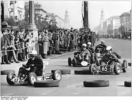

Boxing (also known as "western boxing" or "pugilism") is a combat sport in which two people,
usually
wearing protective gloves and other protective equipment such as hand wraps and mouthguards,
throw
punches at each other for a predetermined amount of time in a boxing ring. More generally, the
term
"boxing" can refer to any combat sport in which two opponents face each other in a fight using
their
fists, covered by gloves in most cases, and differentiated according to their rules, such as
western
boxing, French boxing, Chinese boxing, Thai boxing, kickboxing, and the ancient pygmachia.
While humans have fought in hand-to-hand combat since the dawn of human history, the earliest
evidence of a form of boxing can be seen in Sumerian Carvings the 3rd and 2nd millennia
BC.[3][4][5][6] The earliest evidence of boxing rules date back to Ancient Greece, where boxing
was established as an Olympic game in 688 BC.[3] Boxing evolved from 16th- and 18th-century
prizefights, largely in Great Britain, to the forerunner of modern boxing in the mid-19th
century with the 1867 introduction of the Marquess of Queensberry Rules.
Amateur boxing is both an Olympic and Commonwealth Games sport and is a standard fixture in most
international games — it also has its own World Championships. Boxing is overseen by a referee
over a series of one-to-three-minute intervals called rounds..
Football is a family of team sports that involve, to varying degrees, kicking a ball to score a
goal. Unqualified, the word football normally means the form of football that is the most popular
where the word is used. Sports commonly called football include association football (known as
soccer in North America and Oceania); gridiron football (specifically American football or Canadian
football); Australian rules football; rugby union and rugby league; and Gaelic football.[1] These
various forms of football share to varying extent common origins and are known as football codes.
There are a number of references to traditional, ancient, or prehistoric ball games played in many
different parts of the world.[2][3][4] Contemporary codes of football can be traced back to the
codification of these games at English public schools during the 19th century.
The expansion and cultural influence of the British Empire allowed these rules of football to spread
to areas of British influence outside the directly controlled Empire.[7] By the end of the 19th
century, distinct regional codes were already developing: Gaelic football, for example, deliberately
incorporated the rules of local traditional football games in order to maintain their heritage.
Basketball is a team sport in which two teams, most commonly of five players each, opposing one
another on a rectangular court, compete with the primary objective of shooting a basketball
(approximately 9.4 inches (24 cm) in diameter) through the defender's hoop (a basket 18 inches (46
cm) in diameter mounted 10 feet (3.048 m) high to a backboard at each end of the court, while
preventing the opposing team from shooting through their own hoop.

A field goal is worth two points, unless made from behind the three-point line, when it is worth
three. After a foul, timed play stops and the player fouled or designated to shoot a technical foul
is given one, two or three one-point free throws. The team with the most points at the end of the
game wins, but if regulation play expires with the score tied, an additional period of play
(overtime) is mandated.

Players advance the ball by bouncing it while walking or running (dribbling) or by passing it to a
teammate, both of which require considerable skill. On offense, players may use a variety of shots –
the layup, the jump shot, or a dunk; on defense, they may steal the ball from a dribbler, intercept
passes, or block shots; either offense or defense may collect a rebound, that is, a missed shot that
bounces from rim or backboard. It is a violation to lift or drag one's pivot foot without dribbling
the ball, to carry it, or to hold the ball with both hands then resume dribbling.
Kart racing or karting is a road racing variant of motorsport with open-wheel, four-wheeled vehicles
known as go-karts or shifter karts. They are usually raced on scaled-down circuits, although some
professional kart races are also held on full-size motorsport circuits.
Karting is commonly perceived as the stepping stone to the higher ranks of motorsports, with many
former and current Formula One drivers such as Sebastian Vettel, Nico Rosberg, Ayrton Senna, Max
Verstappen, Lewis Hamilton, Michael Schumacher, Kimi Räikkönen and Fernando Alonso, having begun
their careers in karting.

Karts vary widely in speed and some (known as superkarts) can reach speeds exceeding 161 kilometres
per hour (100 mph), while recreational go-karts intended for the general public may be limited to
lower speeds.
Golf, unlike most ball games, cannot and does not utilize a standardized playing area, and coping
with the varied terrains encountered on different courses is a key part of the game. The game at the
usual level is played on a course with an arranged progression of 18 holes, though recreational
courses can be smaller, often having nine holes.
Each hole on the course must contain a teeing ground to start from, and a putting green containing
the actual hole or cup 4+1⁄4 inches (11 cm) in diameter. There are other standard forms of terrain
in between, such as the fairway, rough (long grass), bunkers (or "sand traps"), and various hazards
(water, rocks) but each hole on a course is unique in its specific layout and arrangement.
Golf is played for the lowest number of strokes by an individual, known as stroke play, or the
lowest score on the most individual holes in a complete round by an individual or team, known as
match play. Stroke play is the most commonly seen format at all levels, but most especially at the
elite level.